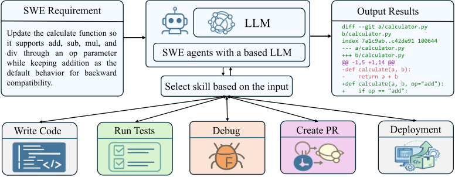
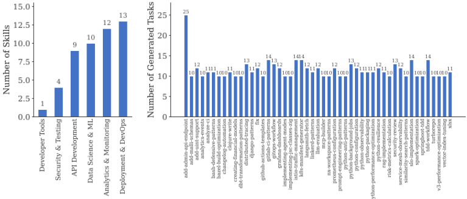
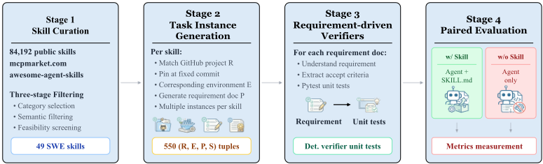
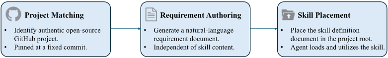
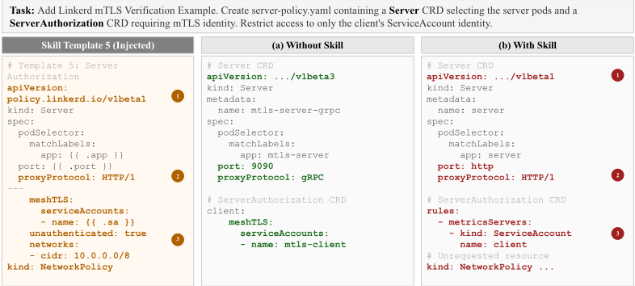

SWE-Skills-Bench：Agent 技能在真实软件工程中真的有帮助吗？
Agent Skills（推理时注入的结构化程序性知识包）正被快速采用，但其在真实端到端软件开发中的实际效用缺乏评估。论文提出 SWE-Skills-Bench，首个需求驱动的技能评测基准：将49个公开SWE技能与固定commit的GitHub仓库配对，生成约565个带显式验收标准的任务实例，并把每条验收标准映射为确定性执行测试，在Claude Code（Claude Haiku 4.5）上进行有/无技能的配对对照实验。结果显示技能收益远低于快速采用所暗示的水平：39/49个技能通过率零提升，平均仅+1.2%，token开销却最高增加450.8%；仅7个技能有实质增益（最高+30%），3个技能因版本错配的指导与项目上下文冲突导致性能下降（最高-10%）。结论是技能是窄域干预，效用强依赖领域匹配度、抽象层级与上下文兼容性，技能设计应偏向抽象指导模式而非硬编码参数的具体模板。
Agent Skills（以markdown包编码程序性知识、标准操作流程、代码模板与领域约定，在推理时注入Agent上下文窗口）生态爆发式增长（136天创建84,192个技能），但没有任何现有基准在真实软件开发场景中评估其效用：SWE类基准（SWE-Bench Verified、TerminalBench、HumanEval等）不含技能条件，技能类基准SkillsBench不聚焦SWE（84个任务中SWE仅16个）。论文要回答的核心问题是：技能注入是否真正帮助Agent满足任务的需求与验收标准？
构建 SWE-Skills-Bench 的四阶段流水线：(1) 技能筛选——从 mcpmarket 排行榜选6个类别，经语义过滤排除生成性/主观性技能、排除环境成本过高的候选，得到49个可单元测试的SWE技能；(2) 任务实例生成——为每个技能配对固定commit并容器化的GitHub项目，按标准化模板（Background/Requirement/File Operations/Acceptance Criteria）生成约10个需求文档，技能通过文件级注入机制放入 ~/.claude 目录，需求文档绝不引用技能；(3) 需求驱动验证——用固定 'professional test engineer' 提示模板将每条验收标准转化为确定性 pytest 测试，建立需求到测试判定的全链路可追溯，不依赖 LLM-as-judge；(4) 配对评估——Agent 为 Claude Code（Claude Haiku 4.5），在有技能/无技能两种条件下运行，指标包括通过率差 ΔP、token 开销比 ρ 与成本效率 CE。
49个技能中39个（约80%）注入后通过率零变化（ΔP=0）；其中24个技能两种条件下均100%通过，15个技能两种条件下通过率相同但不完美（如 xlsx 36.4%、turborepo 50.0%）
平均通过率仅提升+1.2%（89.8%→91.0%），同时平均token消耗增加10.5%
仅7个技能带来正增益（+7.1%至+30.0%）；最佳技能 risk-metrics-calculation ΔP=+30.0% 且 token 开销 ρ=-34.8%；tdd-workflow +7.1% 但 token 开销+78.6%（CE=0.09）
3个技能导致性能下降：springboot-tdd（-10.0%）、linkerd-patterns（-9.1%）、django-patterns（-9.1%），归因于版本错配的指导与项目上下文冲突
在双条件均满分的24个技能中，token开销比 ρ 从 -77.6%（python-resilience）到 +450.8%（service-mesh-observability）；8个技能注入后省token（ρ<-5%），16个增耗（ρ>+5%）；ρ 与 ΔP 在全部49个技能上无一致相关性
基准规模：49个技能、约565个任务实例、覆盖6个SWE子域（Deployment & DevOps 13、Analytics & Monitoring 12、API Development 10、Data Science & ML 9、Security & Testing 4、Developer Tools 1）
首个面向真实软件工程、以'需求是否被满足'为核心成功标准的Agent技能评测基准：与不含技能条件的SWE基准（SWE-Bench Verified、TerminalBench）及非SWE专属的SkillsBench不同，本工作通过固定commit仓库+显式验收标准+确定性执行验证+有/无技能配对设计来隔离技能的边际效用；并首次系统刻画技能引发负收益的'上下文干扰'机制（surface anchoring、hallucination、concept bleed 三阶段，以 linkerd-patterns 为案例），提出技能应偏向抽象指导而非具体模板的设计准则。
相关度级别：high
命中能力域：3.3 Agent 架构与工具使用 | 3.5 评测与可靠使用 | 3.1 上下文工程与记忆
理由：技能系统是 3.3 域明确列出的核心技术：论文直接量化评估'推理时注入技能文档'这一 harness 机制的边际效用、失效模式（上下文干扰三阶段）与设计准则，团队自建技能库/SOP 资产时可直接引用其结论。评测方法（验收标准→确定性执行测试、有/无技能配对对照、ΔP/ρ/CE 指标）命中 3.5 域的评测基准与成本效率优化，为团队建立内部 Agent 评测提供可复用范式。技能本质是推理时的上下文注入，论文对 token 挤占、模板锚定、上下文污染的分析直接服务于 3.1 域的上下文组织与管理。三项均实质命中，判定为 high。
建议动作：深入精读并做内部分享
arXiv:2603.15401v1 [cs.SE] 2026年3月16日
南京大学
穆罕默德·本·扎耶德人工智能大学 txhan@smail.nju.edu.cn
华南理工大学 202330580551@mail.scut.edu.cn
新南威尔士大学 wei.song1@unsw.edu.au
南京大学 fangchunrong@nju.edu.cn
穆罕默德·本·扎耶德人工智能大学 youcheng.sun@mbzuai.ac.ae
穆罕默德·本·扎耶德人工智能大学 lijie.hu@mbzuai.ac.ae
Agent 技能（agent skills）是在推理时注入的结构化程序性知识包，正被越来越多地用于增强大语言模型（LLM）Agent 在软件工程任务中的能力。然而，它们在端到端开发场景中的实际效用仍不明确。我们提出了 SWE-Skills-Bench，这是首个需求驱动的基准测试（benchmark），用于分离 Agent 技能在真实世界软件工程（SWE）中的边际效用。该基准测试将 49 个公开的 SWE 技能与固定在特定 commit 上的真实 GitHub 仓库、以及带有明确验收标准的需求文档相配对，在六个 SWE 子领域中产生了约 565 个任务实例。我们引入了一个确定性验证框架，将每个任务的验收标准映射为基于执行的测试，从而支持在有技能与无技能条件下的受控配对评估。我们的结果表明，技能注入所带来的收益远比其快速普及所暗示的更为有限：49 个技能中有 39 个未带来任何通过率提升，平均增益仅为 +1.2%。Token 开销的变化从少量节省到增加 451% 不等，而通过率保持不变。仅有七个专用技能产生了有意义的增益（最高 +30%），而有三个技能则因版本不匹配的指导与项目上下文相冲突而导致性能下降（最高 -10%）。这些发现表明，Agent 技能是一种作用范围狭窄的干预手段，其效用高度依赖于领域契合度、抽象层级和上下文兼容性。SWE-Skills-Bench 为评估软件工程 Agent 中技能的设计、选择与部署提供了一个测试平台。SWE-Skills-Bench 可在 https://github.com/GeniusHTX/SWE-Skills-Bench 获取。
* 本工作完成于作者在 MBZUAI 的研究访问期间。
‡ 通讯作者。
包含初步结果的预印本，工作仍在进行中。
南京大学 zychen@nju.edu.cn
预印本。

基于大语言模型（LLM）的智能体已被日益广泛地部署于各类软件工程（SWE）任务中，从自动化代码生成与缺陷修复 [1]，到 CI/CD 流水线配置与基础设施管理 [2, 3]。Agent Skills（智能体技能）是一类结构化的 markdown 包，其中编码了程序性知识、标准操作流程、代码模板和领域惯例，供基于 LLM 的智能体使用 [4, 5, 6, 7, 8]。在推理时，技能只需作为参考文档注入智能体的上下文窗口即可。与微调或检索增强生成（RAG）不同，它既不需要修改模型，也不需要外部检索流水线（图 1 展示了在给定一个软件工程任务时智能体技能的工作方式）。这一生态系统呈爆发式增长：仅在 136 天内就创建了超过 84,192 个技能 [9]。
尽管被如此迅速地采用，目前尚无任何现有基准测试（benchmark）在真实软件开发场景中评估 SWE 技能。TerminalBench [10] 评估多文件仓库中的 CLI 任务，但并未包含技能增强条件。HumanEval [11] 和 BigCodeBench [12] 针对的是自包含的函数补全，不涉及多文件上下文或技能增强。SkillsBench [9] 是首个跨领域基准测试，它在成对的技能条件和确定性验证下将智能体技能作为一等工件加以评估。然而，它并非专为软件工程而设计：SWE 仅占其 84 个任务中的 16 个，且其主要目标是衡量广泛的跨领域技能效果，而非真实开发工作流中的需求满足程度。
一个有原则的 SWE 技能效用基准测试必须回答一个看似简单的问题：该技能是否有助于智能体满足任务的需求？软件工程本质上是需求驱动的 [13, 14, 15]：当其规范中陈述的每一条验收标准都得到满足时，任务才算成功，而单元测试正是这些标准的可执行编码。因此，我们采用一种需求驱动的评估方法：每个任务都锚定于一份定义了范围与验收标准的需求文档，并从这些标准系统地推导出基于单元测试的确定性验证器，从而建立起从需求到测试判定的完整可追溯性。
在此方法的基础上，我们提出了 SWE-Skills-Bench，这是一个旨在分离智能体技能对软件工程之边际效用的基准测试。我们从公开仓库中精选了 49 个 SWE 技能，将每个技能与一个固定在特定 commit 上的真实 GitHub 项目配对，并在受控的有技能（with-skill）与无技能（without-skill）条件下进行评估。所有任务实例均通过确定性的、基于执行的检查加以验证，不依赖 LLM-as-judge 评估。
我们的主要贡献如下：
| Benchmark | Size | Skill Cond. | Real Projects | Det. Verifier | SWE-Focused |
|---|---|---|---|---|---|
| SWE-Bench Verified [1] TerminalBench [10] HumanEval [11] SkillsBench [9] SWE-Skills-Bench | 500 200 164 84 565 | None None None Yes Yes | Yes Yes No Yes Yes | Yes Yes Partial Yes Yes | Yes Yes No Partial Yes |
| Benchmark | Size | Skill Cond. | Real Projects | Det. Verifier | SWE-Focused |
我们将相关工作整理为两条主线：与 SWE 相关的基准测试和与技能（Skill）相关的基准测试。总体而言，SWE 相关的基准测试在评估中并不包含技能，而技能相关的基准测试则聚焦于 SWE 任务。据我们所知，我们是首个在软件工程领域评估 Agent 技能的基准测试。表 1 总结了其中的关键差异。
SWE 相关基准测试。这一类工作可进一步分为 SWE 真实世界基准测试和代码生成基准测试。SWE 真实世界基准测试聚焦于真实的、项目级的软件工程任务，并采用基于执行的验证。SWE-Bench Verified [1] 是从 SWE-Bench 中抽取的经人工验证的 500 个实例组成的子集，取自 12 个 Python 仓库，并通过 fail-to-pass 测试进行评估。TerminalBench [10] 在容器化环境中就 200 个真实的 CLI 任务对 Agent 进行评估，为我们的评估设置提供了方法论上的启发。然而，这些基准测试并未隔离注入程序性技能文档所带来的边际收益。相比之下，代码生成基准测试主要在自包含的编程问题（通常是算法类或代码片段级）上评估模型，而不涉及完整的项目上下文。HumanEval [11] 包含 164 个由人工编写的函数级编程挑战，因此无法涵盖多文件推理、依赖管理或端到端的 SWE 工作流。
技能基准测试。SkillsBench [9] 通过比较不同技能条件下 Agent 的表现，朝着将技能作为一等工件（first-class artifacts）进行基准测试的方向迈出了重要的第一步。然而，它并非专门针对 SWE：软件工程仅构成其任务套件中一个有限的部分，且该基准测试并非围绕真实世界开发中的核心成功标准——即在基于仓库的工作流中是否满足显式需求——而设计。我们的工作通过构建一个专注于 SWE 的需求驱动基准测试来弥补这一空白，其中每个技能都与固定 commit 的仓库、显式需求以及确定性的基于执行的验证相配对。
构建 SWE-Skills-Bench 需要依次回答三个关键问题：对哪些技能进行基准测试、如何将每个技能与真实的任务实例相配对，以及如何验证

(a) SWE 各领域精选的技能
(b) 跨技能生成的任务

所述需求是否得到满足。我们的流程分四个阶段进行（图 3）：（1）从大型公开仓库中精选一组具有代表性的 SWE 技能；（2）通过将每个技能与一个固定 commit 的 GitHub 项目及一份需求文档相配对来生成任务实例；（3）设计可追溯至每份需求文档中验收标准的确定性验证器。
技能生态系统规模庞大（136 天内创建了 84,192 个技能 [9]），但在质量、范围和可评估性方面高度异质。我们通过一个三阶段筛选流程精选出一个确定性的、可单元测试的子集。首先，我们扫描 mcpmarket 的类别排行榜，从九个核心类别中选出与软件工程工作流最为契合且适合单元测试评估的六个类别：Developer Tools（开发者工具）、Security & Testing（安全与测试）、API Development（API 开发）、Data Science & ML（数据科学与机器学习）、Deployment & DevOps（部署与 DevOps）以及 Analytics & Monitoring（分析与监控）。其次，我们应用语义过滤来排除生成类或主观类技能，仅保留那些针对具体 SWE 动作的技能，例如 fix、build 和 develop。第三，我们排除那些关联仓库规模过于庞大或会产生高昂环境与搭建成本的候选技能。该流程最终得到 49 个技能，分布于上述六个类别：Deployment & DevOps（13 个）、Analytics & Monitoring（12 个）、API Development（10 个）、Data Science & ML（9 个）、Security & Testing（4 个）以及 Developer Tools（1 个）。图 2(a) 展示了这一分布。

As shown in Figure 4, for each curated skill s , we construct approximately 10 task instances following a three-step procedure.
Project matching. We identify an authentic, open-source GitHub project whose technology stack aligns with the skill's domain. The repository is pinned at a fixed commit to ensure reproducibility. Note that we also create a docker container for running each project.
Requirement authoring. Each requirement P is authored to be specific to its target repository and skill-triggering conditions. To maximize structural clarity and eliminate ambiguity, every P adheres to a standardized template comprising: (i) Background, providing the necessary task context; (ii) Requirement, defining the core objective; (iii) File Operations, specifying the files to be modified or created; and (iv) Acceptance Criteria, offering deterministic success metrics. Figure 7 illustrates the prompt utilized to author the requirement and Figure 8 an example of the generated requirement.
Skill placement. During the container preparation phase, the system removes the .claude/skills directory from the repository to eliminate interference from pre-existing skills. The activation of skill S is governed by a file-level injection mechanism: the skill document S is copied into the ~/.claude directory only when the experimental condition requires its use; otherwise, it is omitted. The agent automatically detects and integrates any skills present in this environment. Importantly, the requirement document P never references S , ensuring that the agent's behavior is governed strictly by the physical presence of the skill configuration.
Totally, for each skill, we generate around 10 instances where detailed distributions in Figure 2(b).
SWE-Skills-Bench 的核心原则是需求驱动验证（requirement-driven verification）。我们不依赖主观判断，而是将需求文档 P 中的每一条验收标准转化为客观、确定性的测试，确保每个测试结果都能直接追溯到某条具体需求。我们将 P（连同仓库元数据，例如 repo 路径、语言以及可用的测试命令）提供给一个固定的“专业测试工程师”提示模板，该模板指示模型：(i) 从每条验收标准中枚举可测试的行为，(ii) 实例化具有代表性以及边界情况的场景，(iii) 将其编码为一个具有强判别力的确定性 pytest 测试文件（即测试必须运行所生成的代码并验证具体的输出/结构，而不是依赖关键词级别的启发式方法）。该提示还强制执行结构性约束，例如最少测试用例数量以及每个测试的 docstring。该提示模板如图 6 所示。
具体而言，对于每个实例，我们从基础镜像创建一个容器，将目标仓库克隆到容器工作区中，并完成环境配置。随后，我们将任务文档（即需求文档 P）通过上述提示模板来驱动测试生成，并将该任务文档作为提示提供给 Claude Code 以进行实现。
每个任务实例是一个元组 ( R,E,P,S )：一个固定在特定 commit 上的 GitHub 仓库 R 及其对应的容器化运行环境、一份规定任务内容的自然语言需求文档 P，以及一个可选的技能文档 S。Agent（具体为 claude code）必须在给定代码仓库 R 和环境 E 的条件下，产出满足 P 中要求的代码变更、配置文件或执行产物。
| Skills | # Tasks | Pass + | Pass - | ∆ P | C + | C - | ρ | CE |
|---|---|---|---|---|---|---|---|---|
| add-uint-support | 12 | 100.0% | 100.0% | 0.0% | 880K | 414K | +112.6% | - |
| analytics-events | 10 | 100.0% | 100.0% | 0.0% | 321K | 157K | +104.6% | - |
| analyze-ci | 11 | 100.0% | 100.0% | 0.0% | 66K | 74K | -10.6% | - |
| dbt-transformation-patterns | 10 | 100.0% | 100.0% | 0.0% | 422K | 208K | +103.2% | - |
| gitops-workflow | 13 | 100.0% | 100.0% | 0.0% | 130K | 57K | +127.1% | - |
| grafana-dashboards | 12 | 100.0% | 100.0% | 0.0% | 150K | 116K | +29.3% | - |
| implementing-agent-modes | 10 | 100.0% | 100.0% | 0.0% | 342K | 655K | -47.8% | - |
| k8s-manifest-generator | 14 | 100.0% | 100.0% | 0.0% | 98K | 51K | +91.2% | - |
| langsmith-fetch | 12 | 100.0% | 100.0% | 0.0% | 102K | 97K | +5.9% | - |
| llm-evaluation | 12 | 100.0% | 100.0% | 0.0% | 238K | 203K | +17.6% | - |
| mcp-builder | 10 | 100.0% | 100.0% | 0.0% | 273K | 200K | +36.1% | - |
| nx-workspace-patterns | 10 | 100.0% | 100.0% | 0.0% | 417K | 365K | +14.5% | - |
| prometheus-configuration | 12 | 100.0% | 100.0% | 0.0% | 225K | 312K | -27.8% | - |
| python-anti-patterns | 10 | 100.0% | 100.0% | 0.0% | 274K | 490K | -44.1% | - |
| python-background-jobs | 13 | 100.0% | 100.0% | 0.0% | 839K | 249K | +236.8% | - |
| python-observability | 11 | 100.0% | 100.0% | 0.0% | 271K | 105K | +157.5% | - |
| python-packaging | 11 | 100.0% | 100.0% | 0.0% | 167K | 74K | +123.9% | - |
| python-performance-optimization | 11 | 100.0% | 100.0% | 0.0% | 91K | 96K | -5.1% | - |
| python-resilience | 12 | 100.0% | 100.0% | 0.0% | 119K | 529K | -77.6% | - |
| rag-implementation | 11 | 100.0% | 100.0% | 0.0% | 258K | 179K | +44.5% | - |
| service-mesh-observability | 12 | 100.0% | 100.0% | 0.0% | 733K | 133K | +450.8% | - |
| slo-implementation | 14 | 100.0% | 100.0% | 0.0% | 144K | 241K | -40.2% | - |
| spark-optimization | 10 | 100.0% | 100.0% | 0.0% | 223K | 180K | +23.9% | - |
| v3-performance-optimization | 10 | 100.0% | 100.0% | 0.0% | 237K | 544K | -56.4% | - |
| add-admin-api-endpoint | 25 | 84.0% | 84.0% | 0.0% | 243K | 232K | +4.4% | - |
| add-malli-schemas | 10 | 90.0% | 90.0% | 0.0% | 646K | 433K | +49.2% | - |
| bash-defensive-patterns | 11 | 90.9% | 90.9% | 0.0% | 565K | 231K | +144.3% | - |
| bazel-build-optimization | 10 | 90.0% | 90.0% | 0.0% | 316K | 790K | -60.0% | - |
| changelog-automation | 10 | 70.0% | 70.0% | 0.0% | 128K | 274K | -53.3% | - |
| clojure-write | 11 | 81.8% | 81.8% | 0.0% | 579K | 869K | -33.4% | - |
| creating-financial-models | 10 | 90.0% | 90.0% | 0.0% | 197K | 195K | +0.7% | - |
| fix | 12 | 91.7% | 91.7% | 0.0% | 202K | 80K | +153.0% | - |
| github-actions-templates | 10 | 70.0% | 70.0% | 0.0% | 85K | 61K | +39.1% | - |
| implementing-jsc-classes-zig | 10 | 90.0% | 90.0% | 0.0% | 1.1M | 940K | +22.0% | - |
| python-configuration | 12 | 91.7% | 91.7% | 0.0% | 199K | 154K | +29.7% | - |
| security-review | 13 | 92.3% | 92.3% | 0.0% | 301K | 299K | +0.9% | - |
| turborepo | 10 | 50.0% | 50.0% | 0.0% | 753K | 262K | +187.9% | - |
| vector-index-tuning | 10 | 90.0% | 90.0% | 0.0% | 475K | 400K | +18.8% | - |
| xlsx | 11 | 36.4% | 36.4% | 0.0% | 1.5M | 1.8M | -18.1% | - |
| risk-metrics-calculation | 10 | 100.0% | 70.0% | +30.0% | 507K | 778K | -34.8% | -0.86 |
| gitlab-ci-patterns | 14 | 78.6% | 64.3% | +14.3% | 326K | 205K | +58.6% | 0.24 |
| prompt-engineering-patterns | 10 | 100.0% | 90.0% | +10.0% | 218K | 149K | +46.4% | 0.22 |
| similarity-search-patterns | 10 | 90.0% | +10.0% | 144K | -0.31 | |||
| distributed-tracing | 13 | 100.0% | 92.3% | +7.7% | 115K | 213K 165K | -32.4% | -0.25 |
| tdd-workflow | 14 | 100.0% 28.6% | 21.4% | +7.1% | 148K | 83K | -30.4% +78.6% | 0.09 |
| 14 | 92.9% | +7.1% | 95K | 121K | -22.0% | -0.32 | ||
| istio-traffic-management | 100.0% | |||||||
| springboot-tdd | 10 | 70.0% | 80.0% | -10.0% | 236K | 374K | -36.8% | 0.27 |
| linkerd-patterns django-patterns | 11 11 | 90.9% 81.8% | 100.0% 90.9% | -9.1% -9.1% | 248K 482K | 165K 462K | +50.3% +4.2% | -0.18 -2.16 |
| Average | 89.8% | |||||||
| 565 | 91.0% | +1.2% | 335K | 303K | +10.5% | - |
| Skills | # Tasks | Pass + | Pass - | ∆ P | C + | C - | ρ | CE |
在我们的评估方法中，需求文档 P 中的每一条验收标准都映射到一个确定性验证器，从而建立起从需求到测试判定结果的完整可追溯性。
所有实验均在 Docker 容器（Ubuntu 24.04，仅 CPU）中运行，每个任务的资源限制由任务配置指定。Agent 为 Claude Code [16]，搭配 Claude Haiku 4.5。对于每个任务，我们分别在 use-skill（使用技能）和 no-skill（不使用技能）两种条件下对其进行评估。在 use-skill 条件下，SKILL.md 被放置在项目根目录中，Agent 无需明确指令即可自主发现并应用它。
设 T s = { t 1 , . . . , t N } 表示与技能 s 相关联的 N 个任务实例的集合。对于每个实例 t i ，令 v + i ∈ { 0 , 1 } 和 v - i ∈ { 0 , 1 } 分别为在 with-skill（使用技能）与 without-skill（不使用技能）条件下的二元通过/失败判定结果，并令 c + i 和 c - i 为相应的 token 成本（Agent 消耗的输入与输出 token 总数）。
∆ 为正值表示技能有所帮助，为零表示无关，∆ 为负值表示产生干扰。
以及由技能注入所引起的 token 开销比：
ρ 为正值表示技能增加了 token 消耗；将 ρ 与 ∆ 进行比较，可以揭示技能带来的收益是否足以抵偿其推理成本。
直观上，CE( s ) 量化了每单位相对 token 增加所获得的成功率提升。较大的正值表示每单位 token 成本带来更大的性能增益，而负值则表示该技能要么降低了性能，要么带来了不成比例的开销。
表 2 给出了全部 49 个技能的完整评估结果。在总体层面，技能注入使平均通过率小幅提升了 +1.2%（从 89.8% 提升至 91.0%），同时使平均 token 消耗增加了 10.5%。然而，在这些平均值之下，各技能的个体表现高度异质。我们围绕五个关键发现来组织分析，这些发现揭示了技能何时有所帮助、何时是冗余的，以及何时会主动干扰 agent 的推理。
发现 1：技能注入在通过率上带来的边际收益有限。在 49 个被评估的技能中，有 39 个（约 80%）产生 ∆P = 0，这意味着技能注入既不会提升也不会损害 agent 在任务层面的成功率。其中，24 个技能达到 Pass+ = Pass- = 100%，表明基础模型本身已具备足够的能力，无需任何技能指导即可解决每一个任务实例。其余 15 个技能在各条件下的通过率相同但并不完美（例如 xlsx 为 36.4%，turborepo 为 50.0%）。这表明瓶颈并不在于领域知识的缺失——技能表面上所提供的正是这类知识——而在于更深层次的能力差距，例如复杂的多步推理、不熟悉的 API 接口，或脆弱的评估框架。对于这些技能，提升通过率很可能需要从根本上重新思考技能内容、升级基础模型，或放宽评估标准，而不是简单地注入更多上下文指导。总体而言，在软件工程领域，平均技能效用增量为 +1.2%，这证实技能注入并非普适的性能提升手段，而是一种有针对性的干预，其收益集中在一小部分技能上。
7
发现 2：token 开销与性能增益相互解耦。即使当 ∆P = 0 时，技能仍可能对推理成本产生很大影响。在两种条件下均取得满分通过率的 24 个技能中，token 开销比 ρ 的范围从 -77.6%（python-resilience）到 +450.8%（service-mesh-observability）。这一跨度表明，注入技能可以在不改变最终结果的情况下改变 Agent 的推理路径。在某些情况下，它使推理更加高效；而在另一些情况下，它则会因冗余探索而拉长过程。在两种条件下均获得满分的 24 个技能中，有 8 个在注入技能后使用的 token 更少（ρ < -5%）。节省幅度有时相当可观，python-resilience 达到 77.6%，v3-performance-optimization 达到 56.4%。这表明这些技能引导 Agent 走向更直接的求解路径。但更普遍的情况是，其余 16 个技能在技能注入下会使用更多 token（ρ > +5%），且往往幅度很大。例如，service-mesh-observability 产生 450.8% 的开销，python-background-jobs 产生 236.8% 的开销。至关重要的是，在全部 49 个技能中，ρ 与 ∆P 之间并未表现出一致的相关性：若干 ∆P > 0 的技能同时降低了 token 消耗（例如 ρ = -34.8% 的 risk-metrics-calculation），而许多 ∆P = 0 的技能则大幅增加了 token 消耗。这种解耦意味着，技能影响推理效率的机制与影响正确性的机制在很大程度上是彼此独立的。
发现 3：一小部分技能带来了有意义的改进。有七个技能实现了 ∆P > 0，增益范围从 +7.1% 到 +30.0%。最有效的技能 risk-metrics-calculation（∆P = +30.0%，ρ = -34.8%）同时提升了正确性并降低了 token 成本，代表了技能注入的理想结果。在另一端，tdd-workflow 带来了 +7.1% 的适度改进，但代价是 78.6% 的 token 开销，导致成本效率较低（CE = 0.09）。在这种情形下，Agent 以使用多得多的 token 为代价换取了更好的性能。这是因为该技能起到了检查清单的作用。它迫使 Agent 关注那些在无技能设置中经常被忽视的边界情况交付物。这种附加的结构使 Agent 更有可能覆盖那些必需却容易被遗漏的步骤，从而提升正确性。然而，这种附加的覆盖也需要更多的验证和后续落实，因此增益往往伴随着更高的 token 成本。
发现 4：技能可能通过上下文干扰主动降低性能。有三个技能表现出负的 ∆ P：springboot-tdd（-10.0%）、linkerd-patterns（-9.1%）和 django-patterns（-9.1%）。这些性能回退揭示了技能注入机制中固有的一种结构性风险：技能的整体性覆盖范围与单个任务的聚焦性需求之间的不匹配。每个技能都是作为其所属技术领域的综合性参考而编写的，其中编码了横跨架构、编码规范、测试策略和错误处理的最佳实践。当任务仅用到这些知识中很窄的一小部分时，多余的上下文可能通过多种方式干扰 Agent 的推理。首先，技能中描述的丰富模式与策略集合不必要地扩大了 Agent 的决策空间，促使其对任务并不需要的设计选择进行反复斟酌。其次，生产级模板可能将 Agent 引向过拟合的解决方案，使其僵化地遵循技能中的示例，而不是适应任务的实际需求。第三，技能文本本身会争夺有限的上下文窗口，挤占了原本可用于理解任务描述和代码库的 token。
如图 5 所示，linkerd-patterns 案例说明了这一机制。该任务要求 Agent 生成一个 Server CRD 和一个 ServerAuthorization CRD，以便为 gRPC 服务强制实施 mTLS 身份验证。该技能打包了七个模板，涵盖完整的 Linkerd 技术栈、安装、命名空间注入、service profiles、流量切分、服务器授权、HTTPRoute 以及多集群设置。其中，模板 5 恰好演示了任务所需的这两个 CRD，但具体取值不同：它使用 API 版本 v1beta1 以及 proxyProtocol: HTTP/1，并展示了多种授权模式，既包括 meshTLS，也包括带 CIDR 范围的未认证访问。这种近似匹配引发了严重的上下文污染，从而干扰了模型对任务的理解。
在不注入技能的情况下，Agent 从第一性原理出发进行推理，并给出了正确的解决方案：它为 Server 选择 v1beta3，设置 proxyProtocol: gRPC 以匹配应用程序，并使用标准的 client.meshTLS.serviceAccounts 字段来配置 ServerAuthorization。而在注入技能后，模板 5 使 Agent 形成锚定，错误在三个阶段中不断累积：
8

图 5：linkerd-patterns 技能中的上下文干扰（ ∆ P = -9.1% ）。该任务要求一个 Server CRD 和一个 ServerAuthorization CRD，为 gRPC 服务实施 mTLS 身份验证。左图：注入技能中的 Template 5，它与任务近似匹配但编码了不同的具体取值：API 版本 v1beta1 搭配 proxyProtocol: HTTP/1，以及多种授权模式（meshTLS、unauthenticated 和基于 CIDR 的模式）。中图：在没有该技能的情况下，agent 从第一性原理出发进行推理，并使用 v1beta3、gRPC 和标准的 meshTLS.serviceAccounts 产出了正确的解决方案。右图：在有该技能的情况下，agent 的输出经历了三个阶段的退化，每个阶段都可追溯到模板的特定区域（由圆圈数字标示对应关系）：1 表面锚定，agent 逐字照抄了 v1beta1 和 HTTP/1；2 幻觉，在调和模板中混杂的授权模式时，agent 凭空捏造了不存在的 rules/metricsServers 字段；3 概念渗漏，模板中的 NetworkPolicy 示例导致 agent 追加了一个未被要求的资源，将 Linkerd 层面与 Kubernetes 层面的授权混为一谈。
这解释了看似矛盾的结果：一个包含客观相关内容的技能反而降低了性能。其现实启示在于，技能设计应优先采用抽象的指导模式，而非带有硬编码参数值的具体化、强主观性模板，因为后者存在将 agent 锚定在特定细节上的风险，而这些细节未必能迁移到目标任务中。
SWE-Skills-Bench 是一项持续进行的工作，旨在系统地理解程序性技能注入如何影响基于大语言模型（LLM）的软件工程 agent。本文所呈现的结果只是一个更宏大、仍在积极演进的研究计划的快照。尽管我们当前的发现已经揭示了若干可操作的洞见——最突出的是技能效用具有高度的领域特异性，以及上下文干扰是一种切实的风险——但当前形式的基准测试仅覆盖了设计空间的一小部分。我们将这项工作视为在奠定基础与评估方法学；沿多个维度的实质性扩展正在进行中，并已有进一步规划。
多模型评估。本工作中的所有实验均使用单一 agent 配置：搭配 Claude Haiku 4.5 的 Claude Code。然而，技能效用很可能受基础模型已有知识与推理能力的调节。较强的模型可能已经内化了技能中所编码的程序性知识，从而使技能变得冗余；而较弱的模型则可能缺乏有效利用所注入上下文的能力。我们计划在一系列多样的基础模型上评估 SWE-Skills-Bench——这些模型在规模、训练数据构成与架构上各不相同——以将模型内在能力与技能带来的提升区分开，并识别哪些模型-技能配对能够带来最有利的成本-性能权衡。
多样化的 agent 脚手架。除基础模型的选择之外，agent 脚手架，即支配工具调用、规划与上下文管理的编排框架，也会显著调节技能被利用的方式。不同的脚手架可能以不同方式分配上下文预算，对长篇技能文档采用不同的检索策略，或对 agent 的推理轨迹施加不同程度的结构化。我们打算在多个开源与专有 agent 框架（例如 SWE-agent、OpenHands、Aider）上对技能效用进行基准测试，以评估我们的发现能否推广到本研究中所用特定脚手架之外。
技能设计原则。我们对上下文干扰的分析（发现 4）表明，技能的形式而不仅仅是其内容，在决定效用方面起着关键作用。依赖带有硬编码参数值的具体化、强主观性模板的技能，存在将 agent 锚定在未必能迁移到目标任务的具体细节上的风险；而编码了抽象指导模式的技能则可能带来更稳健的收益。一个有前景的方向是研究技能粒度、抽象层次与结构组织（例如模块化章节 vs. 整体式文档）如何影响下游性能，目标是为技能作者推导出有实证依据的指南。
动态技能选择与组合。当前的评估框架假设每任务单一技能（one-skill-per-task）的设置，即相关技能已预先放置在项目中。而在实际部署中，agent 必须在推理时从庞大的技能库中进行选择，或组合多个技能。评估技能检索的准确性、多技能之间的交互效应，以及在模糊条件下技能选择的鲁棒性，构成了对我们基准测试（benchmark）的一个重要扩展。
你是一名专业的测试工程师。你的任务是生成自动化测试套件，用于评估 AI Agent 是否正确完成了给定的编程任务。
AI Agent 会接到一个编程任务，需要在真实的软件环境中完成。在 Agent 完成之后，将执行你生成的测试套件，以自动判定任务是否被正确完成。
1. **区分能力**：测试必须能够可靠地区分“真正完成”与“表面上看似合理”的输出。
2. **行为验证**：执行代码并验证其实际输出——不要仅依赖关键字匹配或文件存在性等静态检查。
3. **完整性**：覆盖任务中规定的所有验收标准，包括边界条件和错误处理。
4. **非平凡断言**：验证值、数据结构和逻辑的正确性，而不仅仅是验证它们是否存在。
### 必需的策略
请为以下 AI Agent 任务生成一个测试套件。
### 任务 ID
{task_id}
### 环境
- 项目根目录：{project_root}
- 语言 / 框架：{language}
- 可用工具链：{toolchain}
### 任务描述
{task_description}
### 验收标准
{acceptance_criteria}
### 约束条件
- 单个测试的超时时间：{timeout} 秒
- 执行环境中的可用工具：{available_tools}
# 任务需求文档生成器 - 提示模板
你是一个**任务需求文档生成器**。请基于所提供的 {{information_sources}} 和 {{skill_reference}} 生成一份**任务需求文档**（Markdown 格式）。该任务需求应代表 {{target_context}} 中一个真实的 {{task_scope}}。生成的文档必须**自足完备**：仅阅读本文档的 {{task_executor}} 必须能够理解要构建什么、在哪里进行修改，以及什么才算完成。
1. 匹配 {{target_context}} 真实的 **{{tech_constraints}}**。
2. 保持在 {{skill_reference}} 所定义的**问题范围**之内。
3. 聚焦于具体的**目标、约束、{{artifact_location}}s 以及可验证的结果**。
4. **不得泄露** {{skill_reference}} 的方法、最佳实践或实现模式。
- **配置**：来自 {{config_source}} 的 id、name、description、type、评估配置
- **技能参考**：{{{skill_reference}} 全部内容}
- **任务模板**：{{{task_template}} 全部内容}
| 章节 | 用途 |
|---|---|
| 背景 | {{task_executor}} 所需的上下文 |
| {{artifact_section_name}} | 要创建/修改的具体 {{artifact_type}} 路径 |
| 需求 | 行为、约束、边界情况——**而非**解决方案 |
| 验收标准 | 可观察、可验证的“完成”条件 |
| 章节 | 用途 |
- 只要 {{domain_specifics}} 属于目标的一部分，就指明确切的 {{domain_specifics}}。
- 指明确切的 {{artifact_type}} 路径——避免诸如“{{vague_example}}”之类的模糊条目。
- 指明重要的边界情况、验证规则和失效模式。
- ✗ 将 {{skill_reference}} 的步骤/模式改写进任务需求。
- ✗ 引导性语言（“建议使用”、“建议采用”）。
- ✗ 模糊的 {{artifact_type}} 位置或验证标准。
- ✗ 技术栈与 {{target_context}} 不匹配。
- [ ] {{task_executor}} 无需隐藏知识即可完成任务。
- [ ] 每个 {{artifact_type}} 条目都具体且符合 {{path_format}}。
- [ ] 验收标准以结果为导向。
- [ ] 未泄露 {{skill_reference}} 的方法论。
---
| 变量 | 描述 | 示例 |
|---|---|---|
| `{{task_executor}}` | 任务执行者 | agent、developer |
| `{{target_context}}` | 项目环境 | repository、codebase |
| `{{skill_reference}}` | 知识文档（不得泄露） | SKILL.md |
| `{{tech_constraints}}` | 技术边界 | tech stack、testing style |
| `{{artifact_type}}` | 交付物单元 | file、component |
| `{{artifact_section_name}}` | 交付物章节的标题 | Files to Create/Modify |
| `{{path_format}}` | 路径的表达方式 | repository-relative |
| `{{domain_specifics}}` | 需精确表述的领域名词 | APIs、schemas、events |
| `{{vague_example}}` | 反模式示例 | "files under src/" |
| `{{config_source}}` | 配置来源 | benchmark_config.yaml |
| `{{task_scope}}` | 任务所代表的内容 | development task |
| `{{information_sources}}` | 生成器的输入 | repo info、eval config |
| 变量 | 描述 | 示例 |
PyTorch 代码库（https://github.com/pytorch/pytorch）在其算子库中对无符号整数类型提供了部分支持。目前，若干算术和数学算子尚不支持 `uint16`、`uint32` 和 `uint64` 张量类型。当用户将这些数据类型的张量传递给不支持的算子时，运行时会抛出分发错误（dispatch error）。需要扩展类型分发基础设施，使更多算子能够接受无符号整数输入。
- `aten/src/ATen/native/BinaryOps.cpp` - 算术算子（add、sub、mul、floor_divide、remainder）与位运算算子（and、or、xor、lshift、rshift）的分发注册
- `aten/src/ATen/native/cpu/BinaryOpsKernel.cpp` - 二元算子的 CPU 核函数实现
- `aten/src/ATen/native/TensorCompare.cpp` - 比较算子（eq、ne、lt、le、gt、ge）的分发注册
- `aten/src/ATen/native/GcdLcm.cpp` - GCD 算子的分发与实现
1. 需支持的算子
- 实现必须（MUST）为以下算子显式添加 `uint16`、`uint32` 和 `uint64` 支持（算子名称对应原生 ATen 符号，并在适用时对应 Python API）：
- 算术运算：`add` (aten::add)、`sub` (aten::sub)、`mul` (aten::mul)
- 整数除法 / 取余：`floor_divide` (aten::floor_divide)、`remainder` (aten::remainder)
- 位运算与移位：`bitwise_and` (aten::bitwise_and)、`bitwise_or` (aten::bitwise_or)、`bitwise_xor` (aten::bitwise_xor)、`lshift`/`left_shift` (aten::lshift)、`rshift`/`right_shift` (aten::rshift)
- GCD：`gcd` (aten::gcd)（当代码库中存在时）
- 比较运算：`eq`、`ne`、`lt`、`le`、`gt`、`ge` (aten::* 比较算子)
2. 变更范围
- 对于上述每个算子，需同时更新算子注册/类型分发表以及 `aten/src/ATen/native/` 下的 CPU 核函数实现，使算子能够接受无符号整数张量而不引发分发错误。
- 如果某个无符号 dtype 缺少核函数实现，则添加显式的核函数路径（在语义一致时复用有符号整数实现，或添加一个执行相同且保持 dtype 不变逻辑的轻量适配器）。
- 不得更改本质上仅支持浮点数的算子（例如 `sqrt`、`sin`、`exp`）。
3. 语义与 dtype 规则
- 当所有输入均为同一无符号整数 dtype 时，在语义正确的情况下，算子应为输出保留该 dtype（例如 `add(uint32, uint32) -> uint32`）。
- 对于混合类型输入，遵循现有的 PyTorch 类型提升（promotion）规则；不得在现有有符号整数提升规则之外引入新的提升行为。
- 整数除法行为：实现与当前 PyTorch 整数运算一致的 `floor_divide` 和 `remainder` 语义（不转换为浮点数），并确保无符号输入的结果与非负整数的数学余数/商相匹配。
4. 兼容性与健壮性
- 确保变更能够编译通过，并通过与无符号支持无关的现有单元测试。
- 对于仍然不受支持的算子组合（例如将无符号类型与无法合理组合的类型混合使用），提供回退机制或清晰的错误消息。
5. 面向贡献者的实现说明
- 优先通过分发表条目和轻量适配器来添加 dtype 覆盖，而不是重写算法核函数。
- 为每个算子编写小型单元测试（参见验收标准），以验证其在样例输入上的行为。
- 此前对 `uint32` 或 `uint64` 张量引发分发错误的算子，现在能够成功执行并返回正确结果
- 当所有输入具有相同的无符号类型时，输出张量的 dtype 与输入张量的 dtype 一致
- 仅对浮点类型有意义的算子保持不变
此外，代码仓库应包含最小化的单元测试，用于演示需求中列出的每个算子的正确行为（示例见验收标准）。这些测试应验证 dtype 保持不变、代表性取值的数值正确性，以及边界情况（例如零值、最大值、边界移位）下的合理行为。
- 所列算子接受 `uint16`、`uint32` 和 `uint64` 输入，且不会引发分发错误。
- 对于代表性的无符号输入，算术、除法、取余、按位、GCD 和比较运算的结果在数值上是正确的。
- 当所有输入具有相同的无符号 dtype 时，只要 PyTorch 现有的类型提升规则没有其他要求，结果就保持该 dtype。
- 包括零值、最大可表示值和边界移位计数在内的边界情况行为一致，且不会崩溃。
- 仅支持浮点类型的算子保持不变，无符号支持仅限于具有明确定义整数语义的算子。
2 条证据未在原文中核对到